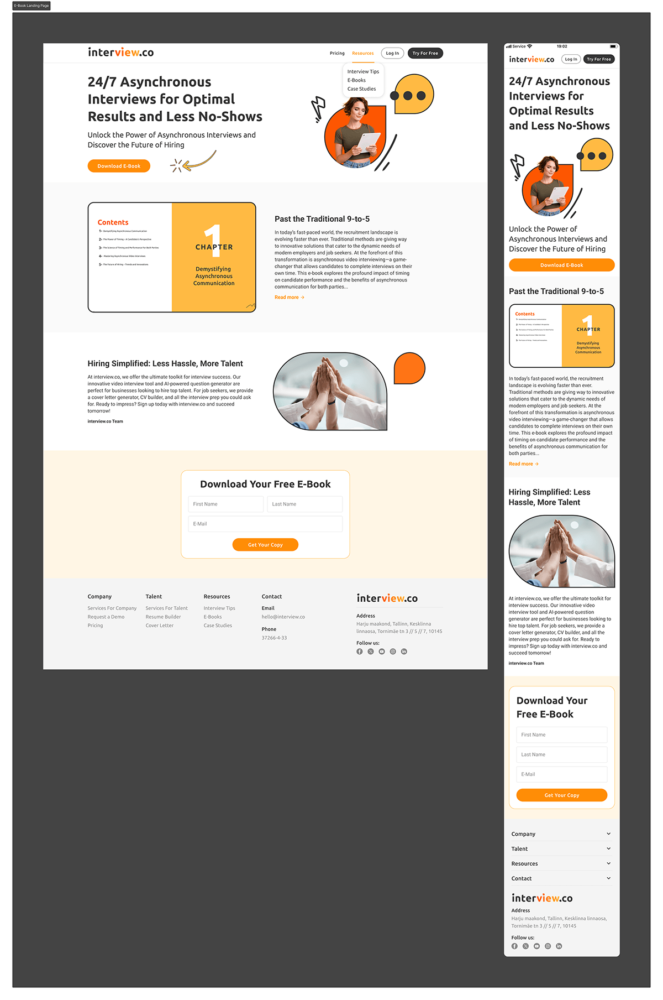

E-book pages: earn the form fill
An e-book landing page is a trade: the reader gives contact details, the page has to prove the content is worth it. The template previews the e-book's actual substance before asking for anything. The download form sits in a distinct, warm-toned band so it reads as a destination rather than an interruption.

Customer stories: proof with a narrative arc
The case-study template tells a complete story: introduction, headline numbers as key takeaways, objectives, implementation steps, challenges and resolutions, then the call to action. The Turkish Airlines "101 Take-Off" story (2,705 candidates interviewed in 78 hours) shows the template at full strength: the numbers get stage front, and the process detail below gives them credibility.

Both pages are templates structured so the marketing team can publish each new e-book or customer story without a designer touching every page.
Design decisions worth noting
- Scannable proof: key statistics are pulled out of the prose into cards, because a skimming HR director should absorb the story in ten seconds.
- A single accent: the brand orange is reserved for actions and highlights, keeping long pages calm and the CTAs unmistakable.
- Mobile parity: every section has a designed mobile counterpart, including how stat cards stack and where the form lands in the scroll.